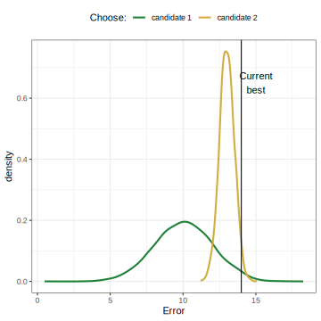
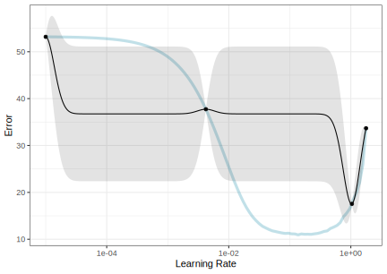
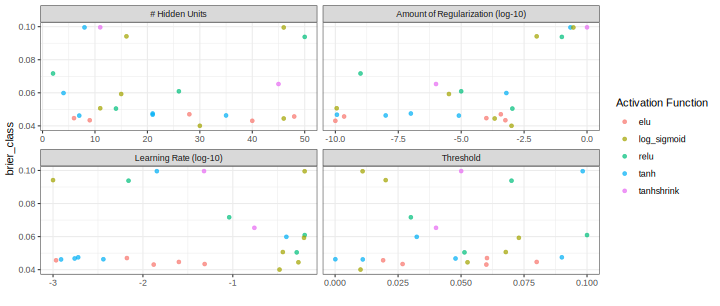
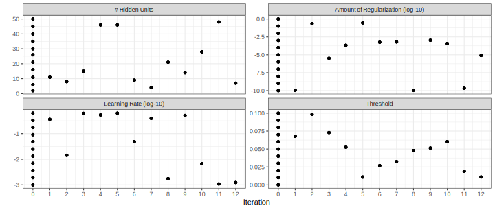
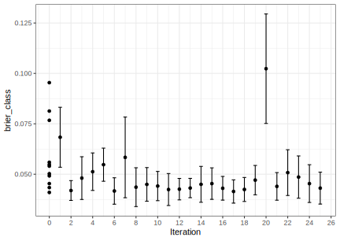

library(tidymodels)
#> ── Attaching packages ──────────────────────────── tidymodels 1.4.1 ──
#> ✔ broom 1.0.9 ✔ rsample 1.3.1
#> ✔ dials 1.4.2 ✔ tailor 0.1.0.9000
#> ✔ dplyr 1.1.4 ✔ tidyr 1.3.1
#> ✔ infer 1.0.9 ✔ tune 2.0.0
#> ✔ modeldata 1.5.1 ✔ workflows 1.3.0
#> ✔ parsnip 1.3.3 ✔ workflowsets 1.1.1
#> ✔ purrr 1.1.0 ✔ yardstick 1.3.2
#> ✔ recipes 1.3.1
#> ── Conflicts ─────────────────────────────── tidymodels_conflicts() ──
#> ✖ purrr::discard() masks scales::discard()
#> ✖ dplyr::filter() masks stats::filter()
#> ✖ dplyr::lag() masks stats::lag()
#> ✖ recipes::step() masks stats::step()
library(important)
library(probably)
#>
#> Attaching package: 'probably'
#> The following objects are masked from 'package:base':
#>
#> as.factor, as.ordered
tidymodels_prefer()
theme_set(theme_bw())
options(pillar.advice = FALSE, pillar.min_title_chars = Inf)
mirai::daemons(parallel::detectCores())Extras - Iterative search
Getting More Out of Feature Engineering and Tuning for Machine Learning
Startup! 

More startup! 
# Load our example data for this section
"https://raw.githubusercontent.com/tidymodels/" |>
paste0("workshops/main/slides/class_data.RData") |>
url() |>
load()
set.seed(429)
sim_split <- initial_split(class_data, prop = 0.75, strata = class)
sim_train <- training(sim_split)
sim_test <- testing(sim_split)
set.seed(523)
sim_rs <- vfold_cv(sim_train, v = 10, strata = class)Neural network 

From the seventh advanced slide deck:
nnet_spec <-
mlp(hidden_units = tune(), penalty = tune(), learn_rate = tune(),
epochs = 100, activation = tune()
) |>
set_engine("brulee", stop_iter = 10) |>
set_mode("classification")
rec <-
recipe(class ~ ., data = sim_train) |>
step_normalize(all_numeric_predictors())
thrsh_tlr <-
tailor() |>
adjust_probability_threshold(threshold = tune())
nnet_wflow <- workflow(rec, nnet_spec, thrsh_tlr)
nnet_param <-
nnet_wflow |>
extract_parameter_set_dials() |>
update(threshold = threshold(c(0.0001, 0.1)))
cls_mtr <- metric_set(brier_class, roc_auc, sensitivity, specificity)Iterative Search
Instead of pre-defining a grid of candidate points, we can model our current results to predict what the next candidate point should be.
Suppose that we are only tuning the learning rate in our neural network.
We could do something like:
brier_model <- lm(brier ~ learn_rate, data = resample_results)and use this to predict and rank new learning rate candidates.
Iterative Search
A linear model probably isn’t the best choice though (more in a minute).
To illustrate the process, we resampled a large grid of learning rate values for our data to show what the relationship is between error and learning rate.
Now suppose that we used a grid of three points in the parameter range for learning rate…
A Large Grid

A Three Point Grid

Gaussian Processes and Optimization
We can make a “meta-model” with a small set of historical performance results.
Gaussian Processes (GP) models are a good choice to model performance.
- It is a Bayesian model so we are using Bayesian Optimization (BO).
- For regression, we can assume that our data are multivariate normal.
- We also define a covariance function for the variance relationship between data points. A common one is:
\[\operatorname{cov}(\boldsymbol{x}_i, \boldsymbol{x}_j) = \exp\left(-\frac{1}{2}|\boldsymbol{x}_i - \boldsymbol{x}_j|^2\right) + \sigma^2_{ij}\]
GPs are good because
- they are flexible regression models (in the sense that splines are flexible).
- we need to get mean and variance predictions (and they are Bayesian)
- their variability is based on spatial distances.
Some people use random forests (with conformal variance estimates) or other methods but GPs are most popular.
Predicting Candidates
The GP model can take candidate tuning parameter combinations as inputs and make predictions for performance (e.g. Brier, ROC AUC, RMSE, etc.)
- The mean performance
- The variance of performance
The variance is mostly driven by spatial variability (the previous equation).
The predicted variance is zero at locations of actual data points and becomes very high when far away from any observed data.
Your turn
Your GP makes predictions on two new candidate tuning parameters.
We want to minimize error.
Which should we choose?

03:00
GP Fit (ribbon is mean +/- 1SD)

Choosing New Candidates
This isn’t a very good fit but we can still use it.
How can we use the outputs to choose the next point to measure?
Acquisition functions take the predicted mean and variance and use them to balance:
- exploration: new candidates should explore new areas.
- exploitation: new candidates must stay near existing values.
Exploration focuses on the variance, exploitation is about the mean.
Acquisition Functions
We’ll use an acquisition function to select a new candidate.
The most popular method appears to be expected improvement (EI) above the current best results.
- Zero at existing data points.
- The expected improvement is integrated over all possible improvement (“expected” in the probability sense).
We would probably pick the point with the largest EI as the next point.
(There are other functions beyond EI.)
Expected Improvement

Iteration
Once we pick the candidate point, we measure performance for it (e.g. resampling).
Another GP is fit, EI is recomputed, and so on.
We stop when we have completed the allowed number of iterations or if we don’t see any improvement after a pre-set number of attempts.
GP Fit with four points

Expected Improvement

BO in tidymodels
We’ll use a function called tune_bayes() that has very similar syntax to tune_grid().
It has an additional initial argument for the initial set of performance estimates and parameter combinations for the GP model.
Initial grid points
initial can be the results of another tune_*() function or an integer (in which case tune_grid() is used under to hood to make such an initial set of results).
We’ll run the optimization more than once, so let’s make an initial grid of results to serve as the substrate for the BO.
I suggest at least the number of tuning parameters plus two as the initial grid for BO.
Qualitative parameters
What about non-numeric tuning parameters such as
activation?Currently, tidymodels converts these to dummy indicators and uses those in the GP. This is not unusual but also not great.
- Our initial grid should include more points; one for each level of the qualitative parameter.
- In our case, the activation function is preset to use 5 possible values.
An upcoming version of tune will use a different R package to fit the GP that uses factor or Gower kernels. This will avoid making indicators and require fewer initial points.
An Initial Grid
set.seed(12)
init_res <-
nnet_wflow |>
tune_grid(
resamples = sim_rs,
grid = nrow(nnet_param) + 6, # for activation values + 1 extra
param_info = nnet_param,
metrics = cls_mtr
)
show_best(init_res, metric = "brier_class", n = 3) |> select(-.metric, -.estimator)
#> # A tibble: 3 × 9
#> hidden_units penalty activation learn_rate threshold mean n std_err
#> <int> <dbl> <chr> <dbl> <dbl> <dbl> <int> <dbl>
#> 1 30 0.001 log_sigmo… 0.331 0.0101 0.0401 10 0.00236
#> 2 40 0.0000000001 elu 0.0132 0.0600 0.0428 10 0.00199
#> 3 6 0.0001 elu 0.0251 0.0800 0.0452 10 0.00241
#> # ℹ 1 more variable: .config <chr>BO using tidymodels
ctrl_bo <- control_bayes(verbose_iter = TRUE, no_improve = Inf)
set.seed(125)
nnet_bayes_res <-
nnet_wflow |>
tune_bayes(
resamples = sim_rs,
initial = init_res, # <- initial results
iter = 25,
control = ctrl_bo,
param_info = nnet_param,
metrics = cls_mtr
)
#> Optimizing brier_class using the expected improvement
#>
#> ── Iteration 1 ───────────────────────────────────────────────────────
#>
#> i Current best: brier_class=0.04006 (@iter 0)
#> i Gaussian process model
#> i Generating 5000 candidates
#> i Predicted candidates
#> i hidden_units=11, penalty=1.13e-10, activation=log_sigmoid, learn_rate=0.36,
#> threshold=0.0678
#> i Estimating performance
#> ✓ Estimating performance
#> ⓧ Newest results: brier_class=0.05066 (+/-0.00347)
#>
#> ── Iteration 2 ───────────────────────────────────────────────────────
#>
#> i Current best: brier_class=0.04006 (@iter 0)
#> i Gaussian process model
#> → A | warning: did not converge in 10 iterations
#> i Generating 5000 candidates
#> i Predicted candidates
#> i hidden_units=8, penalty=0.22, activation=tanh, learn_rate=0.0143,
#> threshold=0.0983
#> i Estimating performance
#> ✓ Estimating performance
#> ⓧ Newest results: brier_class=0.09955 (+/-0.000591)
#>
#> ── Iteration 3 ───────────────────────────────────────────────────────
#>
#> i Current best: brier_class=0.04006 (@iter 0)
#> i Gaussian process model
#> i Generating 5000 candidates
#> i Predicted candidates
#> i hidden_units=15, penalty=3.26e-06, activation=log_sigmoid, learn_rate=0.62,
#> threshold=0.0729
#> i Estimating performance
#> ✓ Estimating performance
#> ⓧ Newest results: brier_class=0.05927 (+/-0.00613)
#>
#> ── Iteration 4 ───────────────────────────────────────────────────────
#>
#> i Current best: brier_class=0.04006 (@iter 0)
#> i Gaussian process model
#> i Generating 5000 candidates
#> i Predicted candidates
#> i hidden_units=46, penalty=0.000214, activation=log_sigmoid,
#> learn_rate=0.537, threshold=0.0526
#> i Estimating performance
#> ✓ Estimating performance
#> ⓧ Newest results: brier_class=0.04447 (+/-0.00401)
#>
#> ── Iteration 5 ───────────────────────────────────────────────────────
#>
#> i Current best: brier_class=0.04006 (@iter 0)
#> i Gaussian process model
#> i Generating 5000 candidates
#> i Predicted candidates
#> i hidden_units=46, penalty=0.287, activation=log_sigmoid, learn_rate=0.63,
#> threshold=0.0109
#> i Estimating performance
#> ✓ Estimating performance
#> ⓧ Newest results: brier_class=0.09951 (+/-0.000609)
#>
#> ── Iteration 6 ───────────────────────────────────────────────────────
#>
#> i Current best: brier_class=0.04006 (@iter 0)
#> i Gaussian process model
#> i Generating 5000 candidates
#> i Predicted candidates
#> i hidden_units=9, penalty=0.00057, activation=elu, learn_rate=0.0486,
#> threshold=0.0268
#> i Estimating performance
#> ✓ Estimating performance
#> ⓧ Newest results: brier_class=0.04341 (+/-0.00331)
#>
#> ── Iteration 7 ───────────────────────────────────────────────────────
#>
#> i Current best: brier_class=0.04006 (@iter 0)
#> i Gaussian process model
#> i Generating 5000 candidates
#> i Predicted candidates
#> i hidden_units=4, penalty=0.000623, activation=tanh, learn_rate=0.394,
#> threshold=0.0324
#> i Estimating performance
#> ✓ Estimating performance
#> ⓧ Newest results: brier_class=0.06138 (+/-0.00713)
#>
#> ── Iteration 8 ───────────────────────────────────────────────────────
#>
#> i Current best: brier_class=0.04006 (@iter 0)
#> i Gaussian process model
#> i Generating 5000 candidates
#> i Predicted candidates
#> i hidden_units=21, penalty=1.15e-10, activation=tanh, learn_rate=0.00174,
#> threshold=0.0478
#> i Estimating performance
#> ✓ Estimating performance
#> ⓧ Newest results: brier_class=0.04668 (+/-0.00289)
#>
#> ── Iteration 9 ───────────────────────────────────────────────────────
#>
#> i Current best: brier_class=0.04006 (@iter 0)
#> i Gaussian process model
#> i Generating 5000 candidates
#> i Predicted candidates
#> i hidden_units=14, penalty=0.00108, activation=relu, learn_rate=0.514,
#> threshold=0.0514
#> i Estimating performance
#> ✓ Estimating performance
#> ⓧ Newest results: brier_class=0.05046 (+/-0.00298)
#>
#> ── Iteration 10 ──────────────────────────────────────────────────────
#>
#> i Current best: brier_class=0.04006 (@iter 0)
#> i Gaussian process model
#> i Generating 5000 candidates
#> i Predicted candidates
#> i hidden_units=36, penalty=0.00052, activation=elu, learn_rate=0.0278,
#> threshold=0.0983
#> i Estimating performance
#> ✓ Estimating performance
#> ⓧ Newest results: brier_class=0.04751 (+/-0.00525)
#>
#> ── Iteration 11 ──────────────────────────────────────────────────────
#>
#> i Current best: brier_class=0.04006 (@iter 0)
#> i Gaussian process model
#> i Generating 5000 candidates
#> i Predicted candidates
#> i hidden_units=34, penalty=0.000502, activation=tanhshrink, learn_rate=0.211,
#> threshold=0.0169
#> i Estimating performance
#> ✓ Estimating performance
#> ⓧ Newest results: brier_class=0.0615 (+/-0.00519)
#>
#> ── Iteration 12 ──────────────────────────────────────────────────────
#>
#> i Current best: brier_class=0.04006 (@iter 0)
#> i Gaussian process model
#> i Generating 5000 candidates
#> i Predicted candidates
#> i hidden_units=4, penalty=1.12e-10, activation=tanhshrink,
#> learn_rate=0.00411, threshold=0.0306
#> i Estimating performance
#> ✓ Estimating performance
#> ⓧ Newest results: brier_class=0.08108 (+/-0.00614)
#>
#> ── Iteration 13 ──────────────────────────────────────────────────────
#>
#> i Current best: brier_class=0.04006 (@iter 0)
#> i Gaussian process model
#> i Generating 5000 candidates
#> i Predicted candidates
#> i hidden_units=46, penalty=1.24e-10, activation=tanh, learn_rate=0.0381,
#> threshold=0.0258
#> i Estimating performance
#> ✓ Estimating performance
#> ⓧ Newest results: brier_class=0.05036 (+/-0.00374)
#>
#> ── Iteration 14 ──────────────────────────────────────────────────────
#>
#> i Current best: brier_class=0.04006 (@iter 0)
#> i Gaussian process model
#> i Generating 5000 candidates
#> i Predicted candidates
#> i hidden_units=23, penalty=1.05e-09, activation=log_sigmoid,
#> learn_rate=0.00102, threshold=0.0621
#> i Estimating performance
#> ✓ Estimating performance
#> ⓧ Newest results: brier_class=0.09518 (+/-0.00543)
#>
#> ── Iteration 15 ──────────────────────────────────────────────────────
#>
#> i Current best: brier_class=0.04006 (@iter 0)
#> i Gaussian process model
#> i Generating 5000 candidates
#> i Predicted candidates
#> i hidden_units=20, penalty=1.02e-10, activation=relu, learn_rate=0.00114,
#> threshold=0.0793
#> i Estimating performance
#> ✓ Estimating performance
#> ⓧ Newest results: brier_class=0.05048 (+/-0.00376)
#>
#> ── Iteration 16 ──────────────────────────────────────────────────────
#>
#> i Current best: brier_class=0.04006 (@iter 0)
#> i Gaussian process model
#> i Generating 5000 candidates
#> i Predicted candidates
#> i hidden_units=21, penalty=2.79e-08, activation=tanh, learn_rate=0.152,
#> threshold=0.0377
#> i Estimating performance
#> ✓ Estimating performance
#> ⓧ Newest results: brier_class=0.05213 (+/-0.00364)
#>
#> ── Iteration 17 ──────────────────────────────────────────────────────
#>
#> i Current best: brier_class=0.04006 (@iter 0)
#> i Gaussian process model
#> i Generating 5000 candidates
#> i Predicted candidates
#> i hidden_units=11, penalty=9.6e-09, activation=relu, learn_rate=0.00578,
#> threshold=0.00296
#> i Estimating performance
#> ✓ Estimating performance
#> ⓧ Newest results: brier_class=0.04632 (+/-0.00282)
#>
#> ── Iteration 18 ──────────────────────────────────────────────────────
#>
#> i Current best: brier_class=0.04006 (@iter 0)
#> i Gaussian process model
#> i Generating 5000 candidates
#> i Predicted candidates
#> i hidden_units=10, penalty=4.01e-07, activation=tanh, learn_rate=0.00101,
#> threshold=0.0157
#> i Estimating performance
#> ✓ Estimating performance
#> ⓧ Newest results: brier_class=0.04711 (+/-0.00288)
#>
#> ── Iteration 19 ──────────────────────────────────────────────────────
#>
#> i Current best: brier_class=0.04006 (@iter 0)
#> i Gaussian process model
#> i Generating 5000 candidates
#> i Predicted candidates
#> i hidden_units=24, penalty=2.16e-07, activation=relu, learn_rate=0.00914,
#> threshold=0.0819
#> i Estimating performance
#> ✓ Estimating performance
#> ⓧ Newest results: brier_class=0.05218 (+/-0.00422)
#>
#> ── Iteration 20 ──────────────────────────────────────────────────────
#>
#> i Current best: brier_class=0.04006 (@iter 0)
#> i Gaussian process model
#> i Generating 5000 candidates
#> i Predicted candidates
#> i hidden_units=6, penalty=0.000116, activation=relu, learn_rate=0.0022,
#> threshold=0.00909
#> i Estimating performance
#> ✓ Estimating performance
#> ⓧ Newest results: brier_class=0.05317 (+/-0.00339)
#>
#> ── Iteration 21 ──────────────────────────────────────────────────────
#>
#> i Current best: brier_class=0.04006 (@iter 0)
#> i Gaussian process model
#> i Generating 5000 candidates
#> i Predicted candidates
#> i hidden_units=35, penalty=0.000918, activation=log_sigmoid,
#> learn_rate=0.00863, threshold=0.00272
#> i Estimating performance
#> ✓ Estimating performance
#> ⓧ Newest results: brier_class=0.0496 (+/-0.00581)
#>
#> ── Iteration 22 ──────────────────────────────────────────────────────
#>
#> i Current best: brier_class=0.04006 (@iter 0)
#> i Gaussian process model
#> i Generating 5000 candidates
#> i Predicted candidates
#> i hidden_units=29, penalty=2.58e-08, activation=log_sigmoid,
#> learn_rate=0.00116, threshold=0.0455
#> i Estimating performance
#> ✓ Estimating performance
#> ⓧ Newest results: brier_class=0.09068 (+/-0.00624)
#>
#> ── Iteration 23 ──────────────────────────────────────────────────────
#>
#> i Current best: brier_class=0.04006 (@iter 0)
#> i Gaussian process model
#> i Generating 5000 candidates
#> i Predicted candidates
#> i hidden_units=32, penalty=0.000724, activation=log_sigmoid,
#> learn_rate=0.577, threshold=0.00293
#> i Estimating performance
#> ✓ Estimating performance
#> ⓧ Newest results: brier_class=0.04983 (+/-0.00503)
#>
#> ── Iteration 24 ──────────────────────────────────────────────────────
#>
#> i Current best: brier_class=0.04006 (@iter 0)
#> i Gaussian process model
#> i Generating 5000 candidates
#> i Predicted candidates
#> i hidden_units=29, penalty=0.000244, activation=log_sigmoid,
#> learn_rate=0.0793, threshold=0.0939
#> i Estimating performance
#> ✓ Estimating performance
#> ⓧ Newest results: brier_class=0.0412 (+/-0.00289)
#>
#> ── Iteration 25 ──────────────────────────────────────────────────────
#>
#> i Current best: brier_class=0.04006 (@iter 0)
#> i Gaussian process model
#> i Generating 5000 candidates
#> i Predicted candidates
#> i hidden_units=38, penalty=0.000286, activation=log_sigmoid, learn_rate=0.24,
#> threshold=0.0495
#> i Estimating performance
#> ✓ Estimating performance
#> ⓧ Newest results: brier_class=0.04345 (+/-0.00354)Best results
show_best(nnet_bayes_res, metric = "brier_class") |> select(-.metric, -.estimator)
#> # A tibble: 5 × 10
#> hidden_units penalty activation learn_rate threshold mean n std_err
#> <int> <dbl> <chr> <dbl> <dbl> <dbl> <int> <dbl>
#> 1 30 0.001 log_sigmo… 0.331 0.0101 0.0401 10 0.00236
#> 2 29 0.000244 log_sigmo… 0.0793 0.0939 0.0412 10 0.00289
#> 3 40 0.0000000001 elu 0.0132 0.0600 0.0428 10 0.00199
#> 4 9 0.000570 elu 0.0486 0.0268 0.0434 10 0.00331
#> 5 38 0.000286 log_sigmo… 0.240 0.0495 0.0435 10 0.00354
#> # ℹ 2 more variables: .config <chr>, .iter <int>Plotting BO Results
autoplot(nnet_bayes_res, metric = "brier_class")
Plotting BO Results
autoplot(nnet_bayes_res, metric = "brier_class", type = "parameters")
Plotting BO Results
autoplot(nnet_bayes_res, metric = "brier_class", type = "performance")
Your turn
Let’s try a different acquisition function: conf_bound(kappa).
We’ll use the objective argument to set it.
Choose your own kappa value:
- Larger values will explore the space more.
- “Large” values are usually less than one.
Bonus points: Before the optimization is done, press <esc> and see what happens.
10:00
Notes
Stopping
tune_bayes()will return the current results.Parallel processing can still be used to more efficiently measure each candidate point.
There are a lot of other iterative methods that you can use.
The finetune package also has functions for simulated annealing search.